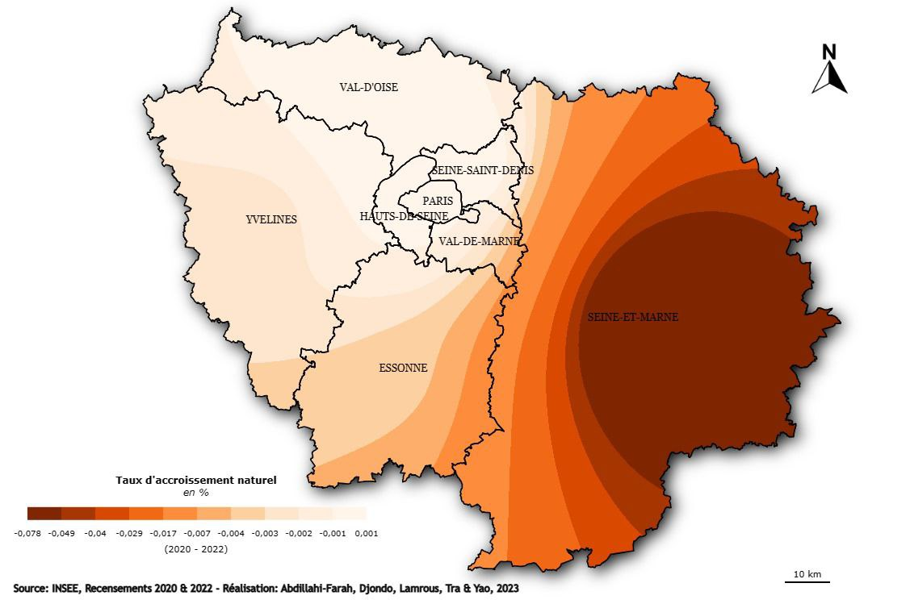
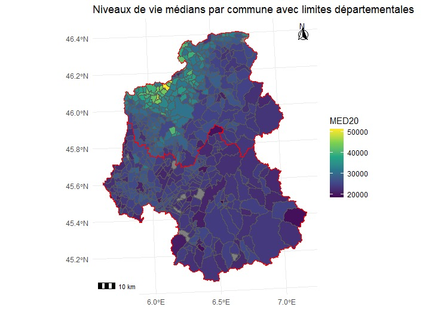
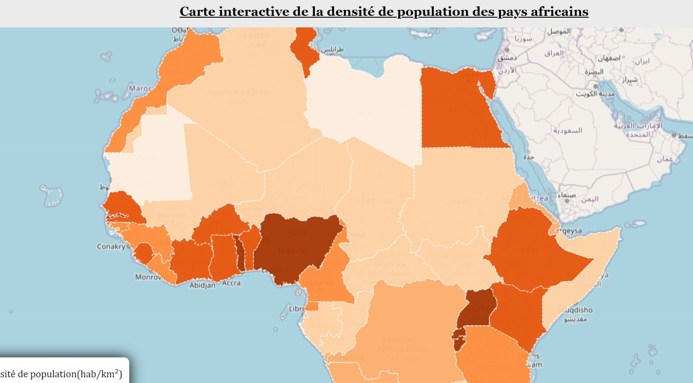
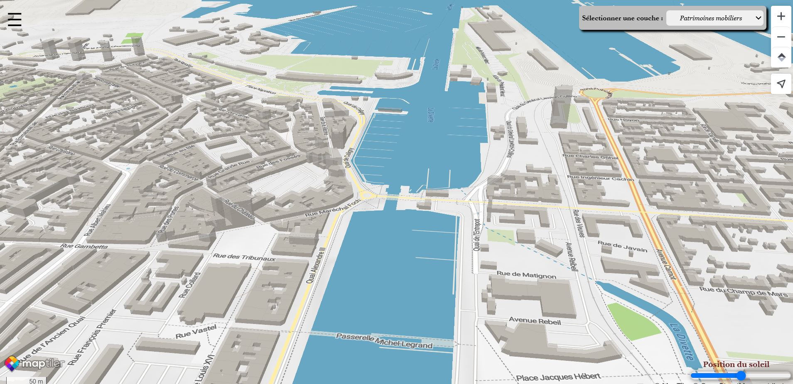
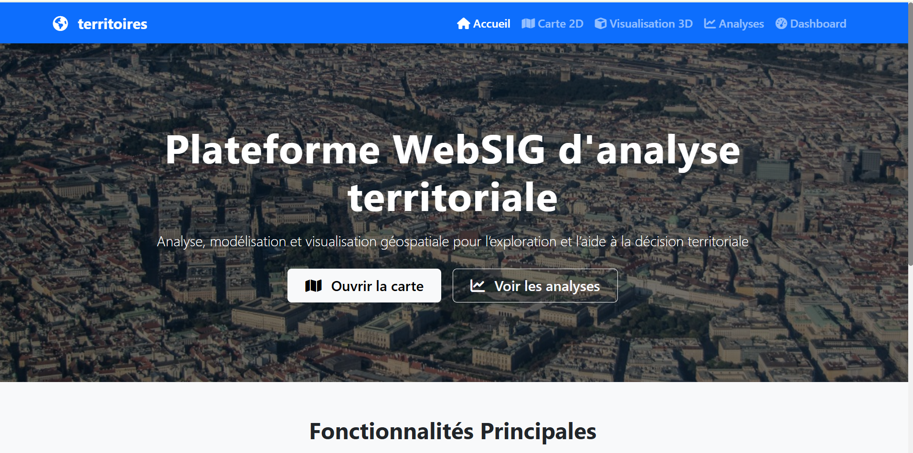
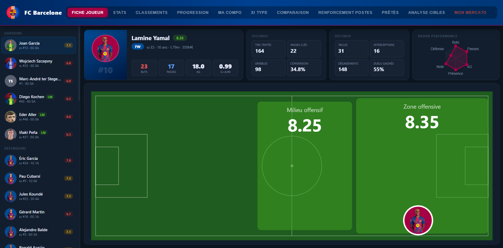
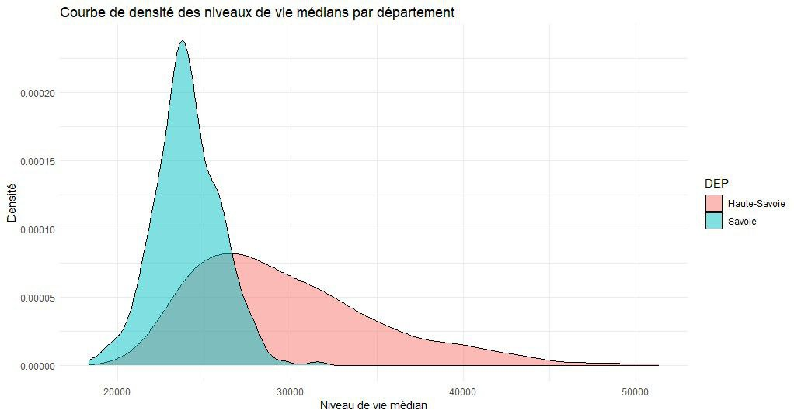
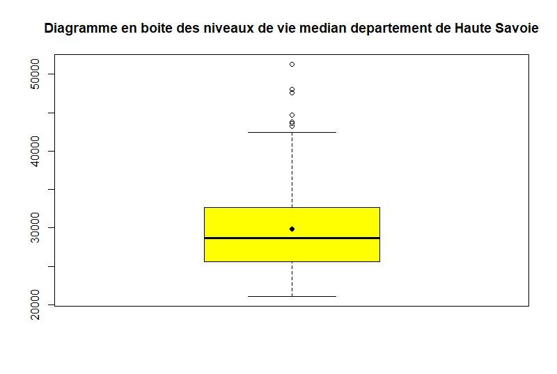
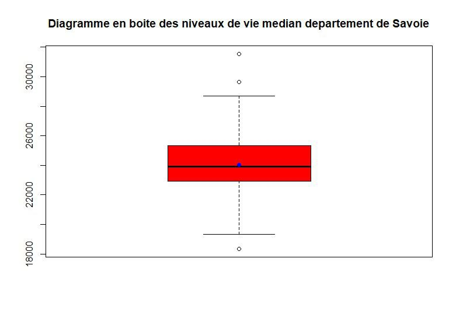

Anicet YAO
Cartographe · Géomaticien · Développeur SIG Full Stack
Je conçois des outils SIG et WebSIG et transforme des données géospatiales complexes en cartes, analyses et indicateurs actionnables. Bases de données géographiques, télédétection, automatisation (Python, SQL, FME) et développement SIG, au service de la décision territoriale.
Repère · AY-01
25
Projets réalisés
6
Structures & missions
9
Domaines d'expertise
30+
Outils maîtrisés
À propos
Profil
Cartographe et géomaticien, je transforme des données géospatiales brutes en cartes, outils et décisions. De la collecte terrain à la mise en production d'un WebSIG, je maîtrise toute la chaîne : structuration de bases de données géographiques (PostgreSQL/PostGIS), traitement d'images satellites, développement d'applications cartographiques et automatisation de traitements avec Python et FME.
Je conjugue rigueur technique et sens du terrain - cartographie interactive, télédétection, analyse spatiale et data science se retrouvent dans chacun de mes projets, avec un objectif constant : livrer une donnée fiable et une carte qui parle directement aux décideurs. ArcGIS, QGIS, Python, JavaScript, SQL, Google Earth Engine et FME sont mes outils du quotidien.
Formé en France, avec des expériences menées en Côte d'Ivoire comme en France (collectivités territoriales, bureaux d'études, IGN, SUEZ), j'aime relever des problématiques géospatiales concrètes, en autonomie comme en équipe, du cadrage d'un projet jusqu'à l'accompagnement des utilisateurs finaux.
Cartographie interactive & WebSIG
Conception et déploiement d'outils WebSIG métier, de la modélisation du besoin jusqu'à la mise en production, pour rendre la donnée géographique accessible et actionnable.
Cartographie & visualisation spatiale
Des cartes et visualisations qui rendent lisibles des dynamiques géographiques complexes, pour éclairer la décision autant que pour raconter un territoire.
Développement SIG & automatisation
Scripts Python et chaînes ETL (FME) pour automatiser les traitements SIG, réduire les tâches manuelles et fiabiliser les workflows de production.
Bases de données géographiques
Conception, structuration et administration de bases PostgreSQL/PostGIS et SGBDR, pour une donnée fiable, cohérente et exploitable.
Photogrammétrie, LiDAR & 3D
Restitution photogrammétrique et exploitation de nuages de points LiDAR pour la modélisation urbaine et environnementale en 3D.
Analyse & modélisation spatiale
Croisement de données spatiales multi-sources pour en extraire des indicateurs territoriaux fiables et des modèles d'aide à la décision.
Pilotage de projets géomatiques
Cadrage, conduite et livraison de projets géomatiques, de l'analyse du besoin jusqu'à l'accompagnement des utilisateurs.
Télédétection & imagerie satellite
Traitement et interprétation d'images Sentinel-2, Landsat et autres sources satellites, au service du suivi environnemental et de l'aménagement.
Data analysis & indicateurs territoriaux
Transformation de données brutes en insights exploitables : statistiques, tableaux de bord et cartographies décisionnelles.
Environnement technique
Boîte à outils
SIG & cartographie
Télédétection & data science
Développement & WebSIG fullstack
Données, DevOps & outils
Formation & expérience
Parcours
Formation
-
2023 - 2025
Master Géomatique - Université de Rouen Normandie
SIG, cartographie, développement et programmation SIG, webmapping, apprentissage automatique, télédétection, data analysis, dataviz, environnement, aménagement.
-
2019 - 2021
Master Géographie physique - Université Alassane Ouattara de Bouaké
SGBDR, programmation et développement SIG, géovisualisation, cartographie, modélisation 3D, climatologie, hydrologie.
-
2016 - 2019
Licence Géographie physique - Université Alassane Ouattara de Bouaké
Analyse et traitement de données, modélisation, webmapping, développement SIG, aménagement du territoire, climatologie, hydrologie.
-
2023
Certificat en Photogrammétrie et Télédétection - IGN FI
Traitement d'images satellites et restitution photogrammétrique appliqués à la modélisation du territoire.
-
2023
Certificat en Télédétection et Systèmes d'Information Géographique — GEOSIG Corporation
Analyse d'images satellites et traitements SIG appliqués au suivi environnemental et territorial.
Expérience
-
2025 - 2026 · 7 mois, distanciel
Géomaticien SIG / WebSIG - SPAX, Abidjan
- Conçu et déployé un outil WebSIG métier pour la visualisation, le suivi et l'exploitation des données géographiques.
- Structuré et administré des bases de données géographiques PostgreSQL/PostGIS pour améliorer la qualité et l'exploitabilité des données.
- Développé des scripts Python pour automatiser les traitements SIG et optimiser les workflows de production.
- Analysé des données spatiales multi-sources pour produire des indicateurs territoriaux et des supports d'aide à la décision.
- Modélisé des données géographiques et conçu des chaînes de traitement adaptées aux besoins métier.
- Produit des cartographies thématiques et des livrables techniques pour la planification et le pilotage opérationnel.
-
2025 · 7 mois
Géomaticien / Data Scientiste - SUEZ, Pessac
- Collecté, intégré et exploité plusieurs sources de données géographiques pour analyser les performances opérationnelles à l'échelle territoriale.
- Modélisé les facteurs spatiaux liés aux erreurs de tri des déchets à l'échelle des IRIS.
- Réalisé des analyses spatiales et statistiques pour identifier les zones aux comportements spécifiques.
- Traité plusieurs milliers d'entités géographiques issues de bases métiers et référentiels.
- Automatisé les chaînes de traitement SIG avec Python pour améliorer la reproductibilité des analyses.
- Produit des cartographies décisionnelles destinées aux équipes et à l'aide au pilotage.
-
2024 · 6 mois
Chargé de missions SIG et géomatique - Le Havre Seine Métropole
- Structuré et mis à jour les référentiels géographiques du PLUi pour garantir la cohérence des données d'aménagement.
- Intégré et contrôlé des données SIG multi-sources provenant de différents partenaires.
- Développé un outil SIG de suivi des haies et de la biodiversité pour accompagner les politiques environnementales.
- Réalisé des analyses spatiales et des travaux de photo-interprétation à partir de données satellitaires.
- Produit des cartes thématiques destinées aux études territoriales et aux équipes métiers.
-
2023 · 10 mois
Cartographe - Géomaticien (SIG et télédétection), Cabinet CGEG, Abidjan
- Analysé des images Sentinel-2 et Landsat pour des projets fonciers et agricoles.
- Développé un outil SIG d'aide à l'aménagement du territoire.
- Produit des cartographies thématiques et des bases de données géographiques.
- Réalisé des traitements automatisés pour l'exploitation de données spatiales.
-
2021 - 2023 · 18 mois
Géomaticien et Administrateur SIG - IGNFI, Abidjan
- Administré des bases de données géographiques foncières et urbaines.
- Intégré et structuré des données spatiales multi-sources.
- Exploité des données LiDAR et photogrammétriques pour la modélisation urbaine.
- Réalisé des analyses spatiales destinées à l'aide à la décision publique.
- Contribué à l'amélioration des processus de gestion et de mise à jour des données.
Savoir-faire
Compétences
Compétences géomatiques
Développement SIG & WebSIG
Management de données
Construction de solutions
Réalisations
Portfolio
-

Aperçu Productions cartographiques
Acteurs potentiels de la gestion des biodéchets
-

Aperçu Productions cartographiques
Destinations d'étude préférentielles
-
.gif)
Aperçu Productions cartographiques
Évolution des surfaces inondées
-

Aperçu Productions cartographiques
Taux d'accroissement naturel
-

Aperçu Productions cartographiques
Perceptions des systèmes éducatifs dans le monde
-

Aperçu Productions cartographiques
Proposition d'écoparc
-

Aperçu Productions cartographiques
Niveau de vie médian par commune
-

Aperçu Productions cartographiques
Carte 3D d'occupation du sol
-

Aperçu Productions cartographiques
Immersion dans l'urbanisation de Rio - données LIDAR IGN (QGIS, Inkscape)
-

Aperçu Productions cartographiques
Proposition d'aménagement de l'écoquartier
-

Aperçu Productions cartographiques
Projet d'aménagement du fond du Val de Mont-Saint-Aignan (zone naturelle / vallon boisé)
-

Ouvrir Production interactive
WebSIG des points de covoiturage en France
-

Ouvrir Production interactive
Geocaching dans la métropole de Rouen
-

Ouvrir Production interactive
Analyse de l'évolution de l'urbanisation
-
Ouvrir Production interactive
Analyse de l'occupation du sol
-

Ouvrir Production interactive
Densité de la population
-
Ouvrir Production interactive
Storymap - Histoire de la Coupe d'Afrique des Nations
-

Ouvrir Production interactive
Carte 3D des patrimoines architecturaux, isochrones et itinéraires
-

Ouvrir Production interactive
WebSIG NormanExplore - valorisation des patrimoines touristiques
-

Ouvrir Production interactive
Application WebSIG interactive - LIDAR, géotraitements, inondation & PostGIS (en développement)
-

Ouvrir Production interactive
Dashboard analytics football
-

Aperçu Productions statistiques
Analyse bivariée entre revenu et niveau de vie
-

Aperçu Productions statistiques
Courbe de densité du niveau de vie médian par département
-

Aperçu Productions statistiques
Diagramme en boîte du niveau de vie médian
-

Aperçu Productions statistiques
Diagramme du niveau de vie médian
Prenons contact
Contact
Téléphone
Adresse
Bordeaux, France
Envoyer un message
Une question, une opportunité, un projet ? Écrivez-moi, je réponds directement sur cet email.